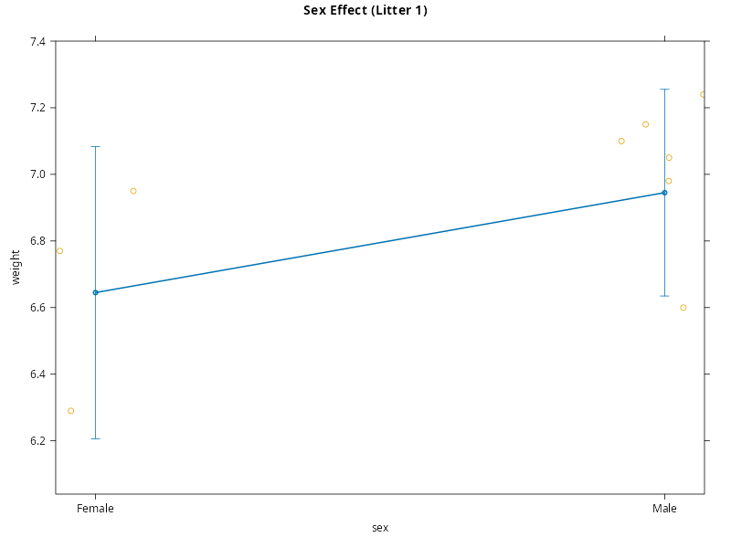

Building the Model I#
Now that we have established the structure of our data, we can move on to modelling it. For this, we assume that all data wrangling and data exploration has taken place and we are now in a position of wanting to specify a model using lme(). In order to do so, we will follow the 3 general steps outlines earlier to build a multilevel model. We will then collapse this to mixed-effects form to fit using lme()
Modelling a Single Dependency Structure#
In our first step, we start by building a model for a single dependency structure. With clustered data, the entities that create dependencies are the clusters themselves. These are the boundaries of dependence. As such, a single dependency structure can be taken to mean a single cluster. For this example, this corresponds to a single litter. Because we have no sub-clusters within litter, we are at the finest level of dependency and can start here. In doing so, we start by imagining that our data was only collected from a single litter of pups.
Subsetting the Data#
Although possible to conduct this step in a purely theoretical fashion, we can also make it more practical by using R to subset the data to just those values from a single litter. Because the specific litter makes no difference here, we simply select the label litter=='1'.
litter.1 <- subset(ratpup, litter=='1')
print(litter.1)
pup_id weight sex litter litsize treatment
1 1 6.60 Male 1 12 Control
2 2 7.40 Male 1 12 Control
3 3 7.15 Male 1 12 Control
4 4 7.24 Male 1 12 Control
5 5 7.10 Male 1 12 Control
6 6 6.04 Male 1 12 Control
7 7 6.98 Male 1 12 Control
8 8 7.05 Male 1 12 Control
9 9 6.95 Female 1 12 Control
10 10 6.29 Female 1 12 Control
11 11 6.77 Female 1 12 Control
12 12 6.57 Female 1 12 Control
Spend a little time studying the output above so you understand the nature of the data we are working with during this step.
Examining Multiple Subsets
A practical point here is that it may be necessary to examine multiple subsets before continuing. In the example above, we can see that litter 1 contains 8 male pups and 4 female pups. This is perfectly fine, but imagine if litter 1 contained all males or all female pups. We may get a biased view of the possible models we could fit to a single litter simply by chance. Instead, it may be worth examining several litters to check whether sex is indeed constant within litters, or whether it does vary within some litters, just not necessarily all.
Identifying Suitable Variables#
Based on the output above, we can see that litter, litsize and treatment are all constant at the level of a single litter. Because of this, we cannot use them as predictors within a single litter. This make sense because these either index the data as a whole (litter) or are manipulated across litters (litsize,treatment). So, if we only have one litter, these are irrelevant. So, to make this very clear, we can remove them from our data for litter 1
litter.1 <- subset(litter.1, select=c(-litter,-litsize,-treatment))
print(litter.1)
pup_id weight sex
1 1 6.60 Male
2 2 7.40 Male
3 3 7.15 Male
4 4 7.24 Male
5 5 7.10 Male
6 6 6.04 Male
7 7 6.98 Male
8 8 7.05 Male
9 9 6.95 Female
10 10 6.29 Female
11 11 6.77 Female
12 12 6.57 Female
We have kept pup_id, even though it is somewhat redundant with the row index as there may be cause to identify individual pups at some point later. This may be especially true if the rows get reordered, either intentionally or unintentionally. Either way, it is good practice to keep track of the units of analysis.
Specifying the Model#
Based on the above, the only useable variables we have at the level of a single litter are weight and sex. So, the only model we can build at the level of a single litter is one that models weight as a function of the sex of the pup. So, our starting point is the normal linear model
where \(y_{ij}\) is the value of weight for pup \(i\) of sex \(j\), \(\mu\) is the average weight of all pups in this litter, \(\alpha_{j}\) is the effect of sex at level \(j\) and \(\eta_{ij}\) is the error. This is effectively a one-way ANOVA model of sex within a single litter.
Checking the Data Supports the Model#
We can now run this model in R. This serves two purposes. Firstly, we can see the syntax we need to model a single dependency structure. This will become relevant later when it comes to specifying the mixed-effects model. Secondly, we can check that the model we want is supported by the data that we have. If there are any problems at this stage, it tells us that we will need to constrain our model further as the data does not contain the degree of variation we need.
We fit the model below, making the intercept parameter explicit in the formula. The reason for this will become clearer later, but is there to provide a more direct connection with the syntax we will need later on.
lm.litter.1 <- lm(weight ~ 1 + sex, data=litter.1)
summary(lm.litter.1)
Call:
lm(formula = weight ~ 1 + sex, data = litter.1)
Residuals:
Min 1Q Median 3Q Max
-0.9050 -0.1425 0.1150 0.2275 0.4550
Coefficients:
Estimate Std. Error t value Pr(>|t|)
(Intercept) 6.6450 0.1969 33.749 1.23e-11 ***
sexMale 0.3000 0.2411 1.244 0.242
---
Signif. codes: 0 ‘***’ 0.001 ‘**’ 0.01 ‘*’ 0.05 ‘.’ 0.1 ‘ ’ 1
Residual standard error: 0.3938 on 10 degrees of freedom
Multiple R-squared: 0.134, Adjusted R-squared: 0.04743
F-statistic: 1.548 on 1 and 10 DF, p-value: 0.2418
There are no issues with fitting this model and so no requirement to constrain the model for a single litter further. As expected, R has implemented the estimability constraint that \(\alpha_{1} = 0\), so \(\hat{\mu}\) is now the average value of weight for female pups and \(\hat{\alpha}_{2}\) is the mean difference between male and female pups. As we can see, in this litter \(\hat{\alpha}_{2} = 0.3\), so there is a small increase in weight for male pups over female pups. We plot the fit below for completeness, but this is not wholly necessary.
plot(effect('sex', mod=lm.litter.1, residuals=TRUE),
partial.residuals=list(smooth=FALSE),
main='Sex Effect (Litter 1)')
